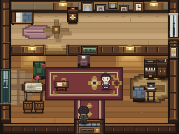
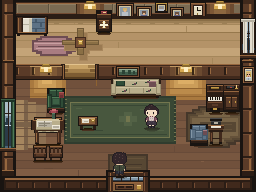
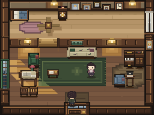
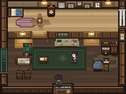

Palmer house, a new case for our intent-driven room studies. Existing native art was the starting point, not an artificially damaged “before.” No generated mockups: these are the game's 256×192 canvas pixels.
Read the post · Evidence and test report · Plan written before the changes · Capture provenance




atto4 story flag dims the living room and removes the daylight beam. No new time system. This is a state check, not a matched-state “before/after.”Every frame: registry entrance (7,10), facing up, Cast Presence enabled, full uncropped camera. Enlarged with nearest-neighbor display only. Upstairs and actors are not part of the static-art redesign. Eye-flow readings are design judgments, not human eye-tracking results.